A General Approach for the Automation of Hydraulic Excavator Arms Using Reinforcement Learning
한줄 요약 — joint·valve 이력, engine RPM, oil temperature로 cylinder-linkage까지 포함한 100 Hz neural actuator model을 만들고 6.7 Hz PPO policy를 100 Hz 실기로 전이해, 별도 gain tuning 없이 네 arm joint의 arbitrary SE(2) trajectory와 soil-contact grading을 추종하며 상용 controller보다 낮은 수직 오차를 낸 범용 유압 arm 자동화법이다.
1.연구 배경 및 동기
해석 유압모델과 장비별 게인 조정 없이 정밀 end-effector 제어하기
유압 굴착기 arm의 end effector를 정확히 제어하는 기술은 석재 조작, 벌목, grading 같은 자율 작업의 공통 기반이다. 하지만 two-stage hydraulic circuit는 pilot pressure로 main valve를 간접 구동해 큰 delay와 dead zone을 만들고, 여러 cylinder가 하나의 pump를 공유해 coupling과 saturation이 발생한다. cylinder의 직선 운동을 joint 회전으로 바꾸는 linkage도 비선형이며 장비마다 다르다. 크기, load-sensing 방식, 온도, 하중, wear, 제조공차까지 더해져 동일 기종도 다르게 반응한다.
정교한 nonlinear model-based controller는 정확한 hydraulic·linkage model과 고정밀 actuator를 요구하고, PID 같은 model-free controller는 기계마다 expert tuning이 길며 nominal condition을 벗어나면 성능이 나빠진다. 과거 neural model 연구는 cylinder별 network 뒤에 별도 cylinder-to-joint 변환이 필요하거나 torque-level 고급 valve에 의존했고, online inverse model은 반복 motion 뒤에도 수십 cm error와 command filtering이 남았다. 저자들의 선행 RL controller도 position-at-rest 목표라 움직이기 위해 항상 position offset이 필요했고 orientation을 제어하지 못했다.
해법은 실기 데이터로 네 actuator와 linkage를 한 network에 흡수하고, link length simulator에서 task-space velocity policy를 학습해 pilot valve에 직접 연결하는 것이다. 원형·직선·soil grading과 Leica 비교로 성능을 확인한다.
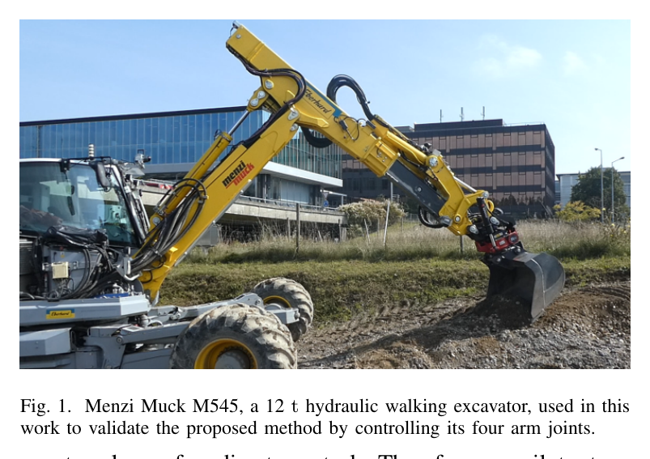
원문 Figure 1 · PDF p.2 — Fig. 1. Menzi Muck M545, a 12 t hydraulic walking excavator, used in this work to validate the proposed method by controlling its four arm joints.
선행 연구의 한계
정확한 analytical hydraulic model은 구축 비용이 높고 장비·온도·wear 변화에 쉽게 어긋난다.
hand-tuned PID·feed-forward controller는 기계마다 expert calibration이 필요하고 nominal operating point 밖에서 성능이 저하된다.
기존 learned model은 별도 cylinder-to-joint 변환이나 고가 torque valve에 의존했고 online inverse법도 큰 오차와 filtering이 남았다.
저자들의 이전 RL position controller는 shovel orientation을 제어하지 못하고 trajectory를 따라 움직이려면 지속적인 position offset이 필요했다.
이 연구의 기여
joint·valve history, engine RPM, oil temperature로 네 arm actuator와 linkage를 함께 나타내는 single neural model을 100분 실기 데이터로 학습했다.
shovel joint의 SE(2) linear·angular velocity를 추종하고 pilot valve setpoint를 직접 출력하는 PPO policy를 설계했다.
observation noise, ±10% hidden action scaling, 낮은 simulation control rate를 사용해 policy를 filter·fine-tuning 없이 12 t 실기에 전이했다.
원형·직선·soil-contact grading에서 3-joint와 4-joint controller를 평가하고 전문가 설치 Leica iCON grading controller와 정량 비교했다.
2.방법론 및 시스템 구성
네 arm joint network는 0.1 s joint history, 0.99 s valve history, RPM·oil temperature로 10 ms 뒤 joint velocity를 예측한다. -1~1 pilot current와 dead-zone offset을 쓰며 linkage와 pump coupling도 data에 흡수한다.
network를 joint dynamics로 놓고 link length만으로 kinematics를 계산한다. 정책은 state history와 shovel pose·desired velocity를 보고 네 pilot setpoint를 출력하며 linear·angular tracking을 분리한다.
실기에서는 simulator actuator를 실제 valve로 바꾸고 6.7 Hz 학습 policy를 100 Hz로 실행한다. 상위 proportional law의 x·z·angle gain은 모두 3.0이다.
처리 파이프라인
1
실기 excitation 수집
네 actuator에 full range ramp와 changing-frequency chirp를 겹친 signal, chirp 없는 signal을 혼합해 100 Hz로 100분 수집한다. 두 유형을 절반씩 써 relevant operating mode를 넓게 덮는다.
2
actuator network 학습
joint position·velocity history, valve history, RPM, oil temperature에서 10 ms 뒤 joint velocity를 예측한다. 네 actuator와 cylinder-joint conversion을 한 network에 함께 넣어 coupling을 포착한다.
3
sim-to-real randomization
관측 noise와 episode별 숨은 ±10% action scaling으로 model·sensor 오차 margin을 만든다.
4
PPO policy 학습
128×128 Tanh, 2.0 s episode, batch 39k, discount 0.97의 PPO+GAE를 약 2시간 학습한다.
5
직접 실기 배치
6.7 Hz 학습 policy를 100 Hz 실기에서 실행해 normalized current setpoint를 pilot valve에 바로 준다. desired pose error와 feed-forward trajectory velocity로 command를 만든다.
6
평가
1.5 m 원형, 높이가 다른 5개 직선의 3/4 joint·Leica 비교, 네 waypoint soil grading을 수행한다.
원문 수식과 의미
velocity tracking reward
r_k=\max(0, r_k^v+r_k^{\dot{\alpha}}+r_k^r+r_k^c)
linear·angular velocity 오차의 exponential reward, 연속 action 변화의 L1 penalty, 양의 상수항을 합하고 0 아래를 잘라 초기 학습의 조기 종료를 억제한다.
trajectory feed-forward velocity에 pose error proportional correction을 더해 학습 policy가 추종할 task-space velocity를 만든다. 실험 gain은 모두 3.0이다.
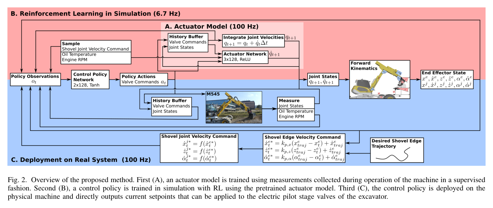
원문 Figure 2 · PDF p.4 — Fig. 2. Overview of the proposed method. First (A), an actuator model is trained using measurements collected during operation of the machine in a supervised fashion. Second (B), a control policy is trained in simulation with RL using the pretrained actuator model. Third (C), the control policy is deployed on the physical machine and directly outputs current setpoints that can be applied to the electric pilot stage valves of the excavator.
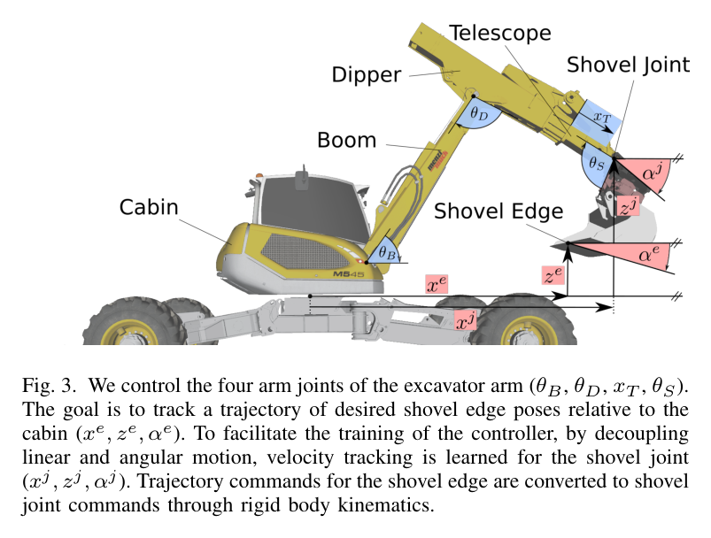
원문 Figure 3 · PDF p.4 — Fig. 3. We control the four arm joints of the excavator arm (θB, θD, xT , θS). The goal is to track a trajectory of desired shovel edge poses relative to the cabin (xe, ze, αe). To facilitate the training of the controller, by decoupling linear and angular motion, velocity tracking is learned for the shovel joint (xj, zj, αj). Trajectory commands for the shovel edge are converted to shovel joint commands through rigid body kinematics.
3.핵심 기술
linkage까지 흡수한 history-based actuator model
network는 valve current에서 cylinder velocity만 예측하지 않고 joint position·velocity로 바로 출력하므로 복잡한 cylinder attachment geometry와 공유 pump coupling이 data에 포함된다. 0.99 s valve history와 0.1 s velocity history가 pilot-main stage delay와 deadzone의 시간 의존성을 표현하고, RPM·oil temperature가 operating condition을 구분한다.
100분 data는 full-stroke ramp에 chirp를 겹친 절반과 chirp 없는 절반을 섞어 동작 mode를 넓혔다.
100 Hz, 100분 실기 data
네 joint를 한 network에서 예측
valve·velocity history와 RPM·temperature 사용
task-space velocity와 orientation을 추종하는 PPO
shovel joint의 linear·angular velocity를 command로 써 arbitrary trajectory에 재사용한다. 여러 시점의 state·action으로 delay를 다루고 pilot current를 직접 출력한다.
원문 Figure 4 · PDF p.6 — Fig. 4. Circular trajectory tracking experiments in the air. Measurements are represented in the cabin frame. (Top) Shovel edge position for 10 cm s−1 average velocity. The arrow indicates the direction of motion. (Bottom) Measured, desired and trajectory shovel joint velocities for a circular trajectory with 10 cm s−1 average velocity and constant orientation.
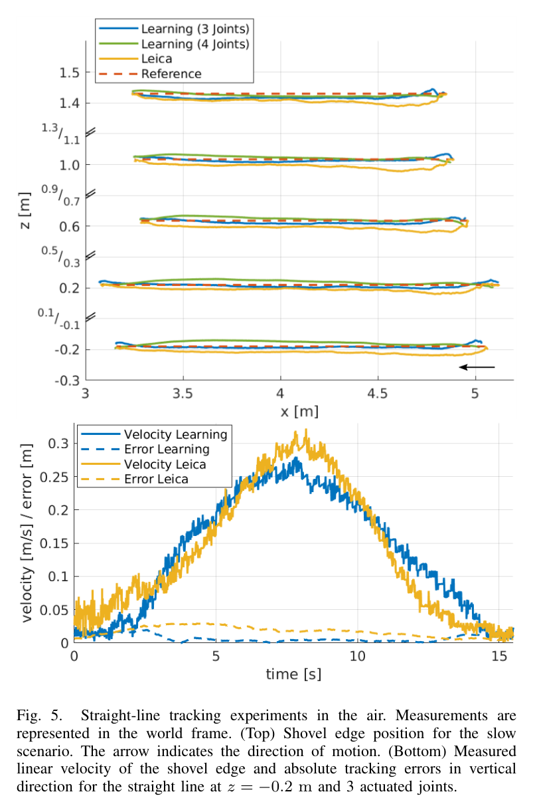
원문 Figure 5 · PDF p.7 — Fig. 5. Straight-line tracking experiments in the air. Measurements are represented in the world frame. (Top) Shovel edge position for the slow scenario. The arrow indicates the direction of motion. (Bottom) Measured linear velocity of the shovel edge and absolute tracking errors in vertical direction for the straight line at z = −0.2 m and 3 actuated joints.
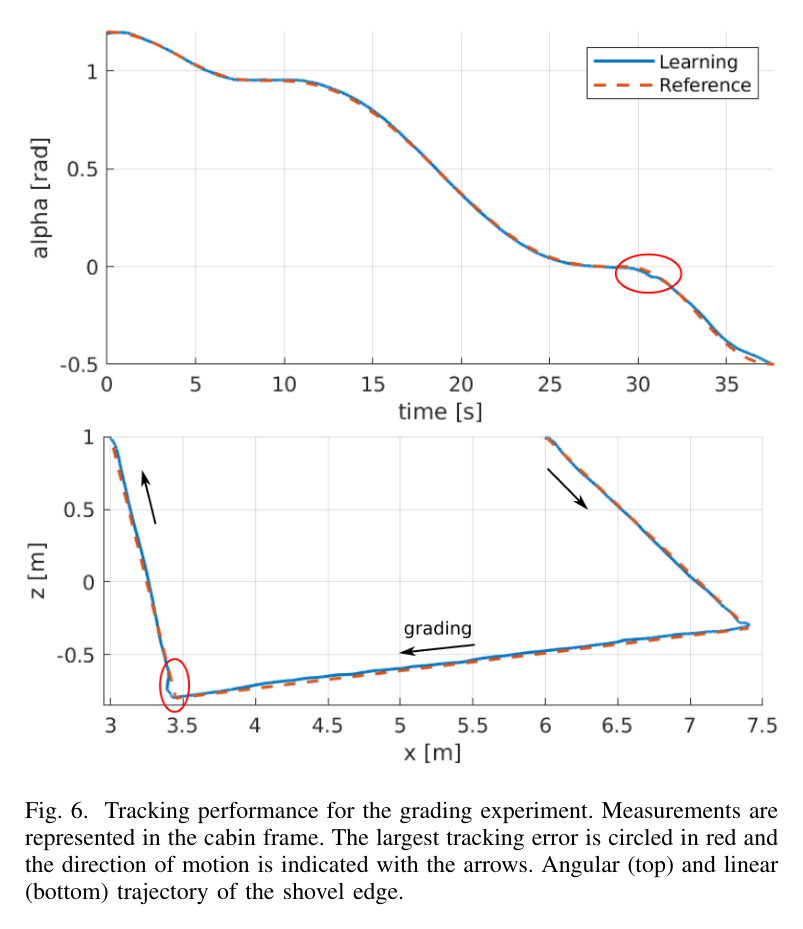
원문 Figure 6 · PDF p.8 — Fig. 6. Tracking performance for the grading experiment. Measurements are represented in the cabin frame. The largest tracking error is circled in red and the direction of motion is indicated with the arrows. Angular (top) and linear (bottom) trajectory of the shovel edge.
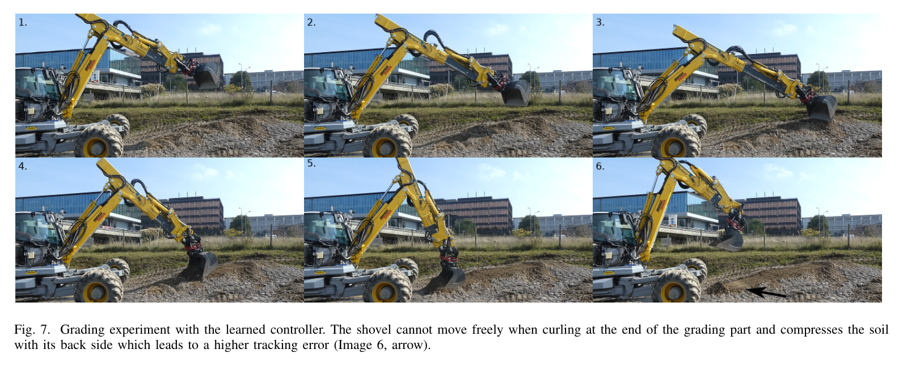
원문 Figure 7 · PDF p.9 — Fig. 7. Grading experiment with the learned controller. The shovel cannot move freely when curling at the end of the grading part and compresses the soil with its back side which leads to a higher tracking error (Image 6, arrow).
핵심 결과 해석
1.5 m 원형에서 10 cm/s learned controller는 평균 position error 1.7 cm, 최대 3.9 cm로 이전 position RL의 7.8·13.5 cm를 크게 줄였다. 15 cm/s에서는 2.2·4.9 cm, 20 cm/s에서는 2.8·6.7 cm였고 normalized ρ는 각각 0.16, 0.13, 0.13 s로 속도가 증가해도 악화되지 않았다. 20 cm/s의 평균·최대 orientation error도 0.011·0.026 rad로 orientation tracking이 추가되었다.
직선 slow 조건의 수직 평균/최대 error는 learned 3-joint 0.7/1.7 cm, learned 4-joint 0.8/1.7 cm, Leica 1.6/3.6 cm였다. fast에서는 learned 3-joint 1.2/2.5 cm, learned 4-joint 0.9/2.2 cm, Leica 1.8/4.2 cm였다. ρz도 slow 0.06·0.07 대 Leica 0.12, fast 0.08·0.06 대 Leica 0.10으로 learned controller가 전반적으로 더 정확했고 telescope 추가 여부 차이는 작았다.
soil-contact grading 구간은 평균 position error 2.0 cm, 최대 3.4 cm, 평균 속도 19.8 cm/s, ρ 0.08 s였고, 접근·lift·curl을 포함한 전체 path는 2.2·6.2 cm, ρ 0.15 s였다. 최대 error는 grading 뒤 bucket을 너무 빨리 curl하면서 충분히 lift하지 않아 back side가 ground를 누른 suboptimal reference trajectory에서 발생했다. soil force를 학습에 넣지 않았음에도 grading 구간의 정밀도가 유지되어 자유공간 data 기반 controller의 disturbance generalization을 보였다.
정량 결과
평가 항목
정량 결과
조건·맥락
원문 근거
10 cm/s 원형 추종
평균 1.7 cm, 최대 3.9 cm
직경 1.5 m; 이전 방법 평균 7.8 cm, 최대 13.5 cm
PDF p.7
20 cm/s 원형 추종
평균 2.8 cm, 최대 6.7 cm, ρ=0.13 s
orientation 평균/최대 0.011/0.026 rad
PDF p.7
slow 직선 수직 오차
learned 3J 0.7/1.7 cm, 4J 0.8/1.7 cm; Leica 1.6/3.6 cm
평균/최대 |ez|, 서로 다른 높이 5개 path
PDF p.8
fast 직선 수직 오차
learned 3J 1.2/2.5 cm, 4J 0.9/2.2 cm; Leica 1.8/4.2 cm
평균/최대 |ez|
PDF p.8
grading 구간
평균 2.0 cm, 최대 3.4 cm, ρ=0.08 s
평균 19.8 cm/s soil-contact surface finishing
PDF p.8
실패 사례와 경계조건
중력 반대 방향의 최고속 원형 구간에서 velocity tracking이 가장 나빴다.
grading 후 curl이 lift보다 빨라 shovel back이 ground를 눌러 전체 최대 error가 6.2 cm였다.
free-space data만 사용해 큰 digging load 적용 범위는 불명확하다.
5.한계 및 향후 연구
현재 한계
한 Menzi Muck M545에서 수집한 100분 data에 기반해 다른 장비에는 같은 절차의 data collection·model·policy training이 필요하다.
actuator model은 motions in air data로 학습되어 grading 이상의 큰 soil force와 bucket loading을 명시적으로 포함하지 않는다.
cabin turn을 제어하지 않아 SE(2)에 제한되며 형식적 stability·safety 보장도 없다.
향후 연구
새 운전 data로 actuator model을 갱신하고 policy를 재학습하거나 online policy improvement로 wear·temperature 변화에 적응한다.
digging 중 pressure-derived joint load를 actuator model input에 넣고 soil-tool force disturbance를 training environment에 추가한다.
multi-machine data와 safety filter를 결합해 재수집 부담을 줄이고 workspace·force 한계를 보장한다.
6.한마디로 정리
핵심 방법은?
실기 history로 neural hydraulic actuator를 만들고 link length simulator에서 pilot-valve PPO velocity policy를 학습한다.
핵심 결과는?
12 t 굴착기에서 arbitrary trajectory와 grading을 cm급으로 추종하고 직선에서 expert-tuned Leica보다 낮은 error를 냈다.
한계는?
단일 장비의 자유공간 data와 SE(2) 작업에 기반하며 다른 장비·고하중 digging에는 model 갱신과 안전 보강이 필요하다.
#학습·RL·IL·VLA#제어·MPC#학습 유압 동역학#RL 속도추종#pilot-stage 밸브 제어
나의 의견 / 우리 연구와의 연관성
상위 planner가 bucket pose·velocity를 주면 learned policy가 delay·deadzone·coupling을 보상해 pilot current를 만든다. 토질별 trajectory는 만들지 않으므로 soil-adaptive planner의 valve-level inner controller로 계층화하는 구성이 자연스럽다.
장비별 hydraulic model을 해석적으로 유도하지 않고 100분 운전 data로 자동 commissioning하는 절차를 제공한다.
task-space velocity interface는 trenching, grading, loading, stone placement의 공통 저수준 arm controller로 재사용 가능하다.
soil-adaptive planner의 bucket velocity를 받아 valve deadzone·delay를 보상하는 inner controller로 쓸 수 있다.
7.전체 그림·표
본문 핵심 위치에 배치하지 않은 원문 Figure와 Table을 원문 페이지 순서로 수록한다.
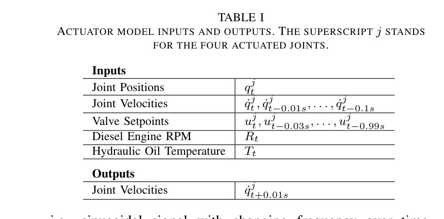
원문 Table I · PDF p.4 — TABLE I ACTUATOR MODEL INPUTS AND OUTPUTS. THE SUPERSCRIPT j STANDS FOR THE FOUR ACTUATED JOINTS.
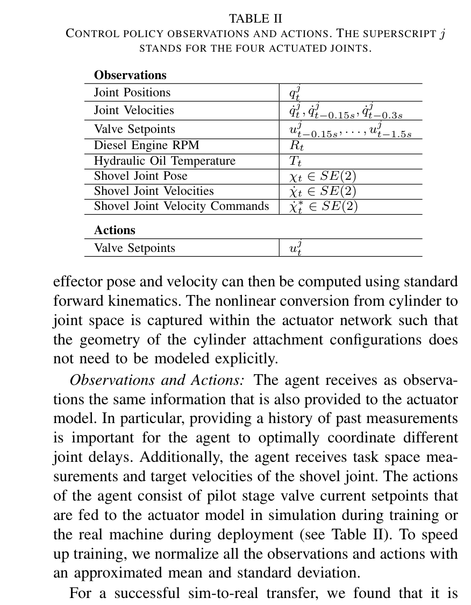
원문 Table II · PDF p.5 — TABLE II CONTROL POLICY OBSERVATIONS AND ACTIONS. THE SUPERSCRIPT j STANDS FOR THE FOUR ACTUATED JOINTS.
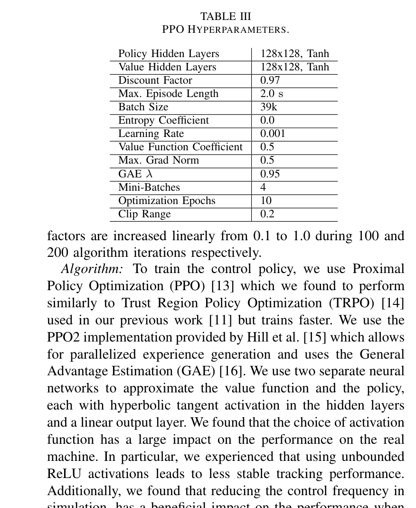
원문 Table III · PDF p.6 — TABLE III PPO HYPERPARAMETERS.
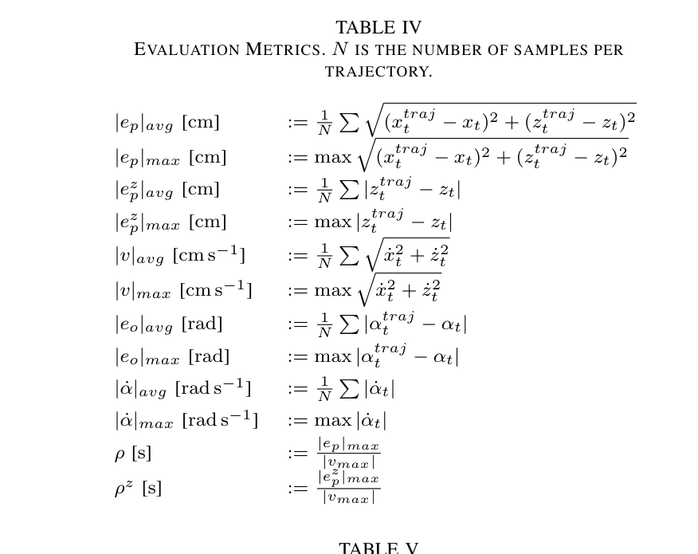
원문 Table IV · PDF p.7 — TABLE IV EVALUATION METRICS. N IS THE NUMBER OF SAMPLES PER TRAJECTORY.
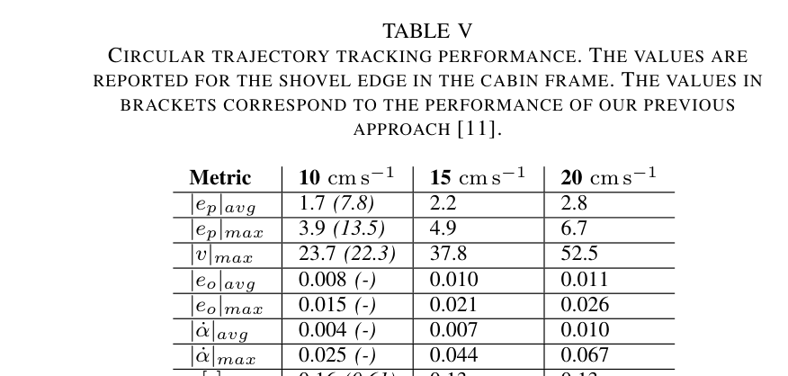
원문 Table V · PDF p.7 — TABLE V CIRCULAR TRAJECTORY TRACKING PERFORMANCE. THE VALUES ARE REPORTED FOR THE SHOVEL EDGE IN THE CABIN FRAME. THE VALUES IN BRACKETS CORRESPOND TO THE PERFORMANCE OF OUR PREVIOUS APPROACH [11].
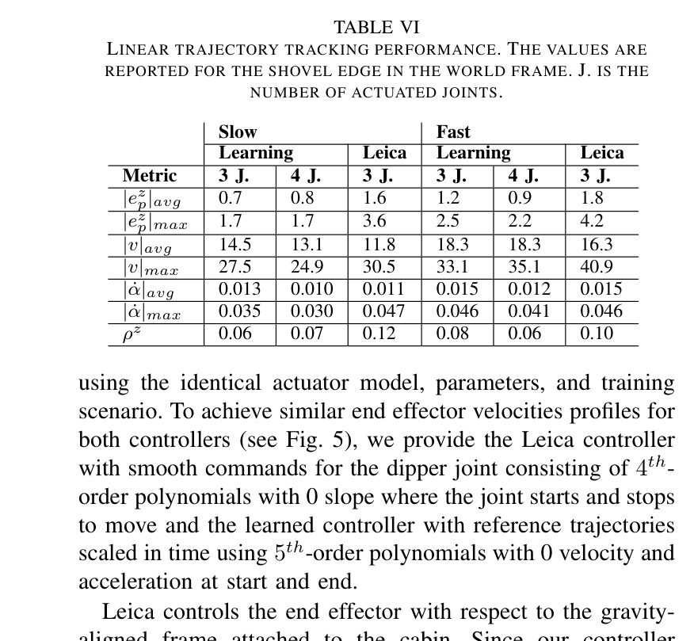
원문 Table VI · PDF p.8 — TABLE VI LINEAR TRAJECTORY TRACKING PERFORMANCE. THE VALUES ARE REPORTED FOR THE SHOVEL EDGE IN THE WORLD FRAME. J. IS THE NUMBER OF ACTUATED JOINTS.
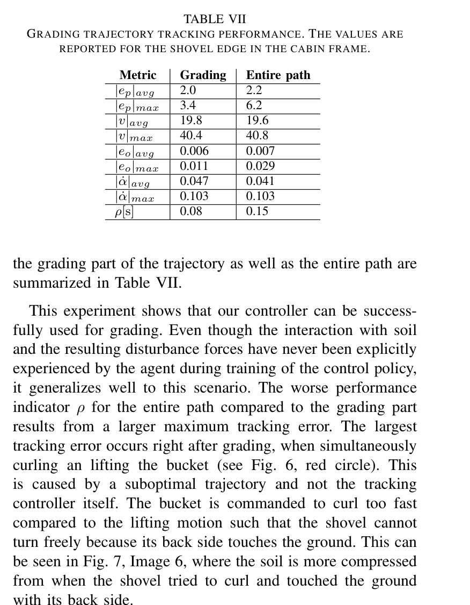
원문 Table VII · PDF p.8 — TABLE VII GRADING TRAJECTORY TRACKING PERFORMANCE. THE VALUES ARE REPORTED FOR THE SHOVEL EDGE IN THE CABIN FRAME.